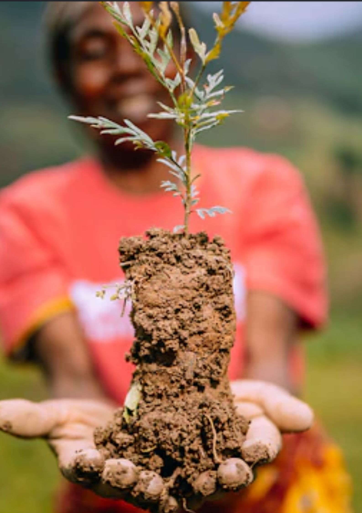
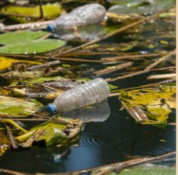

Mō mātou -
About us
Ko au te whenua, ko te whenua ko au.
I started this project as a way to save the life my inner self wanted, and then it grew into more than that. In school, I learned two words that stuck with me for life, and they were kaitiakitanga and manaakitanga. In my school days, I was annoyed because every year they would talk about the same thing over and over again. But now I see the true meaning. Manaakitanga is not only about being caring, nice, and loving to the people around you; it is also to the land that houses you.
The land takes care of us without even asking the people for anything, and now humans have taken this hospitality as a sign to do whatever they want. This is when the word kaitiakitanga emerged in my head. After years of school life, I did not understand what that word truly meant, but now it has revealed itself. Kaitiakitanga shows that when we take care of the land around us, it is not only us taking care of the land—it is that we see the land as one with us.
I am the land and the land is me. Ko au te whenua, ko te whenua ko au. This motto has stayed with me in my heart throughout the process of making this website. So, the true goal of this website is to make people truly feel the connection with the land, and that without it, we are nothing.

Over 100 million kgs of rubbish has been picked up due to environment advisory.

In the pass year we have planted over 10 million trees.

Due to your donated money, we are able to do more research on ways we can stop climate change. An example is we make clothes that are make of paper recycling.

we combat plastic pollution in our seas with our new invention that sucks in the plastic bottles and turns them into art and jewelry.
If you are unable to donate do not worry there are other ways you can help.
Using paper bags instead of plastic bags
Taking less time showering
Picking up trash when you see it
Turn off the light when you leave a room.
Instead of using a car, bike and walk more.
Start a vegetables garden in your backyard
Try making art out of the rubbish you have.